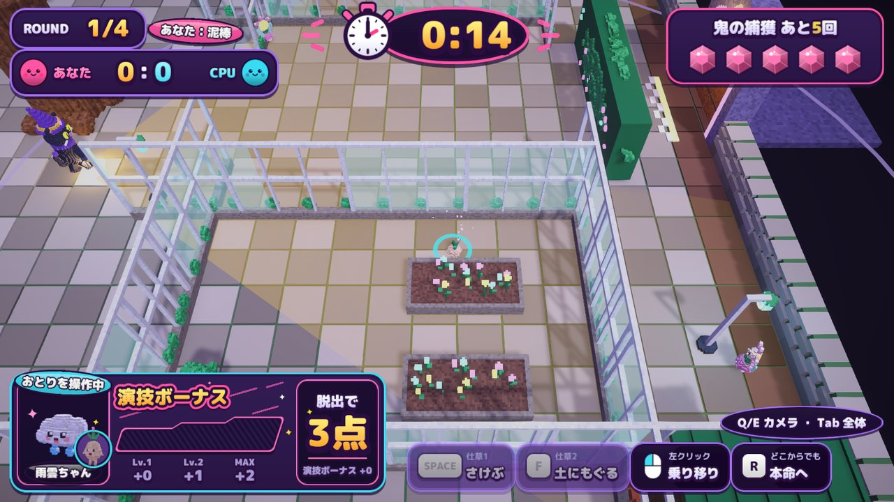
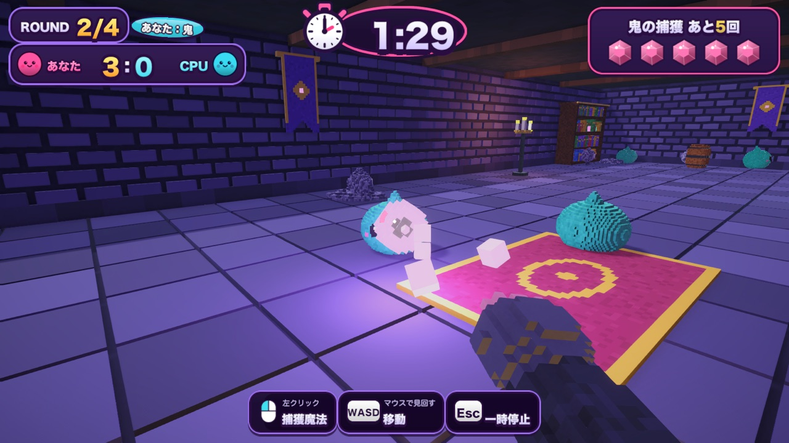
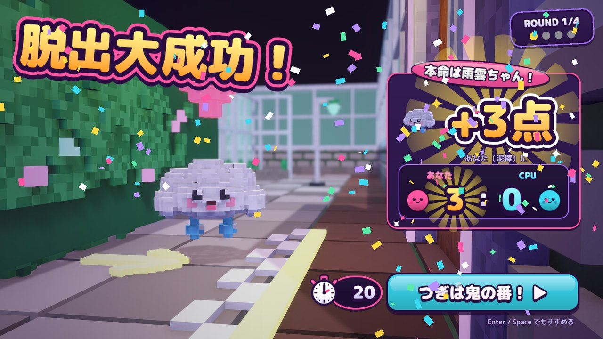

どんなゲーム？
泥棒：なりきって運ぶ
宝石を隠す「本命」を選び、出口へ。ほかの子に乗り移っておとりにもできる。まわりと同じように歩き、止まり、仕草をして、NPCのふりをしよう。
鬼：見破って捕まえる
一人称で群れを見張り、不自然な子に捕獲魔法。ただし人が操作している子が本命とは限らない。からっぽの子に当てても回数はへる。
攻守を交代して勝負
各自2回ずつ泥棒をして合計点で勝負。出口から遠い子ほど高得点。友達とはオンラインのフレンド対戦で。
画面



はじめかた
Windows
- zip を右クリック →「すべて展開」。
- フォルダの中の
Copycat Crook.exeをダブルクリック。 - 「WindowsによってPCが保護されました」と出たら「詳細情報」→「実行」。
個人で作っているテスト版なので、署名がなく警告が出ます。
Mac
- zip をダブルクリックして展開し、
CopycatCrook.appを開く。 - 「開けません」と出たら、システム設定 → プライバシーとセキュリティの下の方にある「このまま開く」。
- 同じ家のネットワークで遊ぶときは「ローカルネットワーク」の確認で「許可」。
「壊れているため開けません」と出るときは、ターミナルでこれを1回だけ：
xattr -dr com.apple.quarantine ~/Downloads/CopycatCrook.app
ダウンロードしたファイルの確認（任意）
配っているのはこのページと GitHub の Releases だけです。ほかの場所から受け取った zip は開かないでください。中身が本物かどうかは、次の SHA-256 と一致するかで確かめられます。
f1b7b18f6a1809b6dd9221ad34ad6c6bdc122b5b83cd5c01c5ff05967ad6e25d CopycatCrook-mac.zip 5f087ce19293ff4a2e4c97d052e45dcd443390081df7f22e1df2cb0fa3013bcb CopycatCrook-win.zip
友達と遊ぶ
2人とも同じ版が必要です。「ゲームのバージョンが違います」と出たら、このページから最新版を落とし直してください。
ネット越し（部屋コード）
- 片方がタイトルの「フレンド対戦」→ テストサーバーの「部屋をつくる」。
AB3CD のような5文字の部屋コードが出ます。 - 部屋コードを LINE などで友達に送る。
- 友達は「フレンド対戦」→ コードを入れて「参加」。
- 2人そろったら、部屋を作った人が「対戦スタート！」。
同じ家のネットワーク
- 片方が「フレンド対戦」→ LAN の「部屋をつくる」。
- もう片方の「フレンド対戦」の LAN の欄に部屋が出るので押す。
出てこないときは、部屋を作った側に表示されるアドレス（例 192.168.0.10）を入れて「参加」。
操作
| 泥棒 | WASD 移動 Space・F 仕草 左クリック 乗り移り R 本命へ戻る Q・E カメラ Tab 全体 |
|---|---|
| 鬼 | マウス 見回す WASD 移動 左クリック 捕獲魔法 Esc メニュー |
コントローラー
| 泥棒 | 左スティック 移動 A・B 仕草 LB・RB で選んで X 乗り移り Y 本命へ 右スティック カメラ LT 全体 |
|---|---|
| 鬼 | 右スティック 見回す 左スティック 移動 RT 捕獲魔法 START メニュー |
| 画面 | スティック 選ぶ A 決定 B 戻る（PlayStation のコントローラーは ×○□△ の表示になります） |
ひとりでも CPU と対戦できます。フレンド対戦の部屋コードの入力だけはキーボードを使ってください。